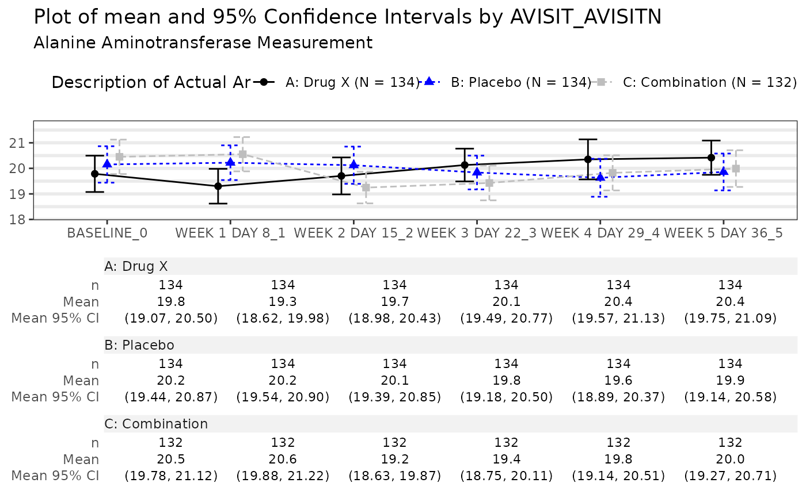
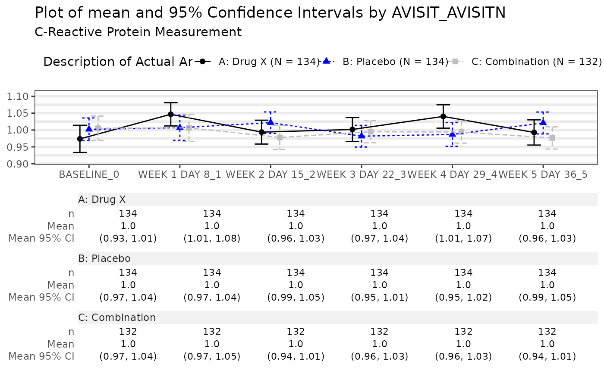
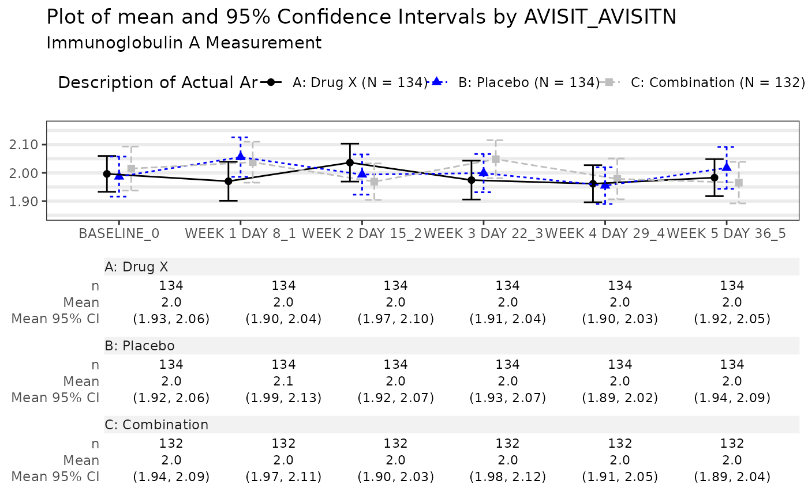

MNG01 Graph 1 (Default) Mean Plot 1.
mng01_1.RdOverview of a summary statistics across time and arm for a selected data set.
Usage
mng01_1_main(
adam_db,
dataset = "adlb",
x_var = "AVISIT",
y_var = "AVAL",
y_name = "PARAM",
y_unit = NA,
arm_var = "ACTARM",
center_fun = c("mean", "median"),
interval_fun = c("mean_ci", "mean_sei", "mean_sdi", "median_ci", "quantiles", "range"),
show_table = TRUE,
jitter = TRUE,
show_n = TRUE,
show_h_grid = TRUE,
show_v_grid = FALSE,
legend_pos = "top",
line_col = nestcolor::color_palette()
)
mng01_1_pre(adam_db, dataset, x_var = "AVISIT")
mng01_1_post(tlg)
mng01_1Arguments
- adam_db
(
dm) object containing theADaMdatasets- dataset
(
string) the name of a table in theadam_dbobject.- x_var
(
character) the name of a column in thedatasetto represent on the x-axis.- y_var
(
string) the name of the variable to be represented on the y-axis.- y_name
(
string) the variable name fory. Used for plot's subtitle.- y_unit
(
string) the name of the variable with the units ofy. Used for plot's subtitle. ifNA, onlyy_nameis displayed as subtitle.- arm_var
(
character) variable used for column splitting- center_fun
(
string) the function to compute the estimate value.- interval_fun
(
string) the function defining the crossbar range.- show_table
(
flag) should the summary statistic table be displayed.- jitter
(
flag) should data point be slightly spread on the x-axis.- show_n
(
flag) should the number of observation be displayed int the table.- show_h_grid
(
flag) should horizontal grid be displayed.- show_v_grid
(
flag) should vertical grid be displayed.- legend_pos
(
string) the position of the legend.- line_col
(
character) describing the colors to use for the lines or a namedcharactervector associating values ofarm_varwith color names.- tlg
(
TableTree,Listingorggplot) object typically produced by amainfunction.
Functions
mng01_1_main(): Main TLG Functionmng01_1_pre(): Preprocessingmng01_1_post(): Postprocessing
Note
adam_dbobject must contain the table specified bydatasetwith the columns specified byx_var,y_var,y_name,y_unitandarm_var.
Examples
library(dm)
library(dplyr)
#>
#> Attaching package: ‘dplyr’
#> The following objects are masked from ‘package:stats’:
#>
#> filter, lag
#> The following objects are masked from ‘package:base’:
#>
#> intersect, setdiff, setequal, union
col <- c(
"A: Drug X" = "black",
"B: Placebo" = "blue",
"C: Combination" = "gray"
)
run(mng01_1, syn_data, dataset = "adlb", line_col = col)
#> $`Alanine Aminotransferase Measurement`

#>
#> $`C-Reactive Protein Measurement`

#>
#> $`Immunoglobulin A Measurement`

#>
#> attr(,"class")
#> [1] "gg_list" "list"